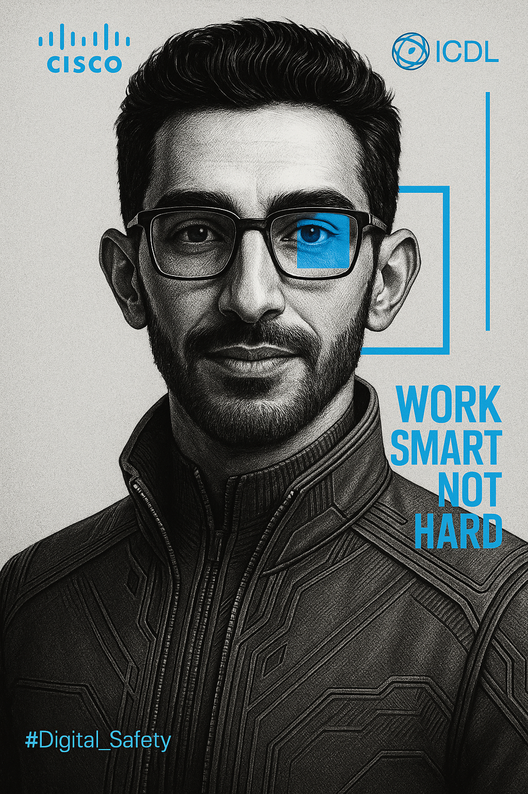

Eng Mahmood Othman

Experienced and resourceful IT and networking technician with a bachelors degree in Electronics and Telecommunications. Accomplished at Digital Safety Training and Management.
Thrives working in a dynamic environment that call for exceptional adaptability, flexibility, and effective collaboration and teamwork with and within teams. With excellent written and spoken English language.
Hobbies
- Basketball
- E-Sports
- Watching movies
Certifications
- Electronics and Telecommunications Engineering.
- - University of Aden
- TOEFL iBT Certification Preparation
- - New Horizons ELI
- Microsoft IT Support Specialist
- - Microsoft
- Google Project Management Professional
- Cisco Certified Networking Associate
- - Cisco
Testimonials
"Mahmood is an excellent technician with great problem-solving skills. He always delivers on time."
- John Smith, Manager at ABC Company
"His knowledge of networking is outstanding. He helped us solve complex network issues efficiently."
- Sarah Johnson, CTO at XYZ Tech
Contact Me
Email: mahmood.al.ariki@gmail.com
Phone: +967 738904911